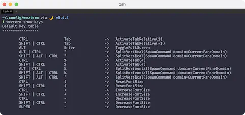
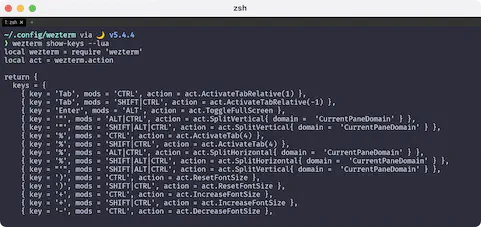

Key Binding
ここはちょっと難しいというか、どこまでWezTermをメインに持ってくるのかみたいなところがあります。
例えばtmux。
WezTerm自体がtmuxと同等かそれ以上の機能を持っているので、
WezTermに対してtmuxと同じキーバインドを与えてしまえば、これは不要になるわけです。
1
...と言っても、わたしがローカルでしか使っていないから大丈夫なだけで、ネットワークを介して使う場合は困る事もあるかもしれませんし、 実際にデフォルトでは徹底的に他のソフトウェアとの衝突を避けています。
The default key assignments are shown in the table.
デフォルトのキー割り当ては、表のとおりです。
現在のキーバインド確認
まずは現在のキーバインドがどうなっているのかを確認します。
Prints the complete set of key assignments based on your config file.
設定ファイルに基づいたキー割り当ての完全なセットを表示します。
実行してみましょう。WezTermでそのままweztermコマンドを使えば良いです。

そう、これが現在のキーバインドですね。
設定を落とし込む
で、ここで提案なんですが、キーバインドを自分の設定ファイルに落とし込んじゃったらどうかな？と思うわけです。
それをやるにはどうすれば簡単かな〜っていう話になるんですけど、方法はすでにありました。

さすがですね☺️ もはやレールは存在していました。これを自分の設定に持っていけば良いだけです。
ということで、keybinds.luaとでもしてここに設定を落とし込みます。
これはもうプロっぽく片付けちゃいましょう。シェル芸というやつです✨
>を使って出力先をファイルにすると、もうこれだけで流し込めちゃうんですね。簡単😆
むしろ同名ファイルが存在している場合は完全に上書きしちゃうみたいなので注意❗
また、上記例のファイル出力先は現在のディレクトリです。
~/.config/weztermに移動するか、出力先を~/.config/wezterm/keybinds.luaに指定してください。
読み込み先を切り替える
ここまでは暗黙的にデフォルト設定が適用されていましたが、これからは自分で作ったkeybinds.luaを使っていきましょう。
このサイトではまだ取り扱っていませんが、
Key Tables
という機能があって、これをkeybinds.lua内でカスタマイズしても、このままでは反映されません。
なのでごめんなさい😱 上のコードだけでは混乱の元になってました😭
keybinds.lua内でKey Tablesのカスタマイズをする場合、以下のコードも必要になります。
key_tables = require('keybinds').key_tables,
これで、keybinds.lua内で編集したKey Tablesがちゃんと反映されるようになります🥹
冒頭のリンクを再掲しますが、一番下にこのようにあります。
If you don't want the default assignments to be registered, you can disable all of them with this configuration; if you chose to do this, you must explicitly register every binding.
デフォルトの割り当てを登録したくない場合は、この設定ですべての割り当てを無効にできます。これを選択した場合は、すべてのバインディングを明示的に登録しなければなりません。
デフォルト設定は以下で完全に無効化されます。不安に感じるようであればスキップしても大丈夫です。
1: 実際わたしも、WezTermを使う前はiTerm2の上でtmuxを動かしていました😄